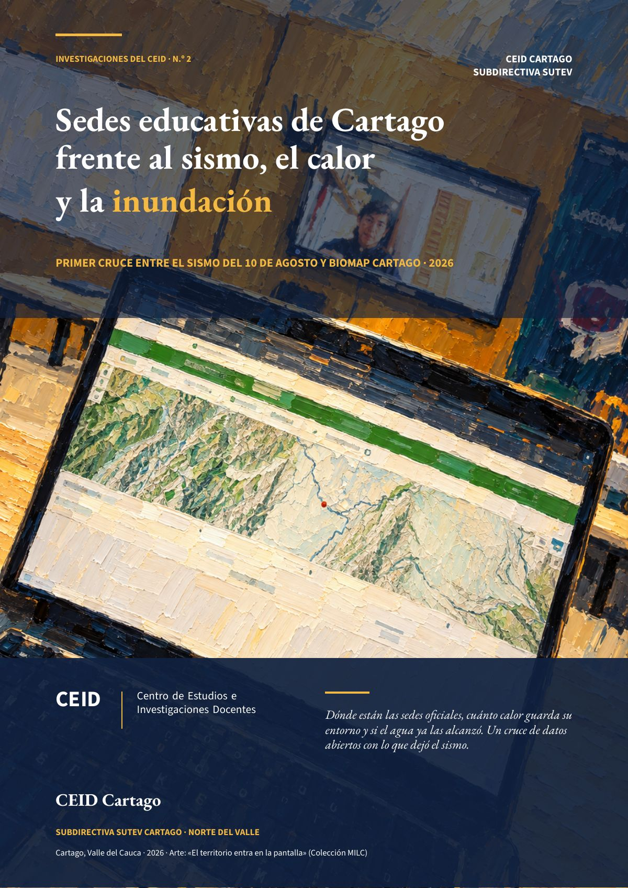

Sedes educativas de Cartago frente al sismo, el calor y la inundación
Dónde están las sedes oficiales, cuánto calor guarda su entorno y si el agua ya las alcanzó. Un cruce de datos abiertos con lo que dejó el sismo.
- 27 de 38sedes oficiales ubicadas con confianza
- 8sedes en calor extremo o en un registro de inundación del IDEAM
- 25 de 27sedes ubicadas con afectación del sismo

Después del sismo del 10 de agosto de 2026, el CEID documentó 38 sedes de 11 instituciones oficiales de Cartago. Esta investigación pregunta qué más enfrentan esas sedes: el calor y el agua. Para responder hubo que ubicarlas, porque OpenStreetMap solo tenía 12 de ellas. Las capas de calor, verde y relieve vienen de BioMap Cartago, la plataforma de datos abiertos de los estudiantes Jhoan Sebastián Mosquera Cadavid y Jhoan Esneider Mejia Ortiz (I.E. Sor María Juliana); la inundación, de los registros oficiales del IDEAM consultados en vivo.
Ubicar fue la mitad del trabajo
Doce sedes se ubicaron por su objeto en OpenStreetMap y quince por su dirección oficial, sin estimar ninguna. Quedaron once sin ubicar: nueve rurales, que solo tienen vereda o corregimiento como dirección, y dos urbanas con dirección ambigua.
El cruce
De las 27 sedes ubicadas, 25 tuvieron afectación con el sismo. El daño se publica solo en forma agrupada, como en «Las grietas que ya estaban». Sobre ese daño casi general se suman el calor y el agua.
Fuente: cálculo del CEID con BioMap Cartago e IDEAM. Calor extremo: superficie de 42,85 °C o más. Inundación: amenaza alta o media por creciente súbita o área inundada en La Niña. 38 sedes de 11 instituciones.
En las ocho sedes expuestas al calor o al agua estudian entre 1.085 y 1.694 de los 5.771 estudiantes que las instituciones reportaron después del sismo. Las dos sedes que colapsaron, Policarpa Salavarrieta y Mercedes Abrego, están en calor extremo.
Qué tan firme es el resultado
El número de sedes expuestas depende de cómo se defina cada amenaza: va de 7 a 12. La definición principal usa el punto exacto de cada sede y los registros oficiales del IDEAM.
Fuente: cálculo del CEID con BioMap Cartago e IDEAM, sobre las 27 sedes ubicadas.
Lo que propone el CEID
A la Secretaría de Educación Municipal:
- Georreferenciar las 42 sedes oficiales en las visitas técnicas de la reconstrucción, empezando por las 11 sin ubicar, y publicar las coordenadas como dato abierto.
- Dar prioridad en la reconstrucción a las 8 sedes expuestas al calor o al agua, con estudios técnicos que consideren también el calor y la inundación.
- Reconstruir con criterio térmico las cubiertas de Policarpa Salavarrieta y Mercedes Abrego, como piloto para las demás sedes.
- Medir la temperatura del aire en las aulas de las 10 sedes en calor extremo o al borde del umbral, durante una temporada seca.
A la Unidad Municipal para la Gestión del Riesgo de Desastres:
- Verificar en campo las 9 sedes con registro del IDEAM en el punto o a menos de 50 m.
- Incluirlas en el plan de contingencia de lluvias, con su ruta de evacuación y el aviso temprano a las rectorías.
- Ampliar los planes escolares de gestión del riesgo al calor y a la inundación, no solo al sismo.
El documento completo trae el mapa de las sedes, la exposición de cada sede ubicada, el método, sus límites y las referencias en APA. Son estimaciones con datos satelitales para priorizar, no mediciones de campo.